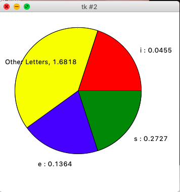
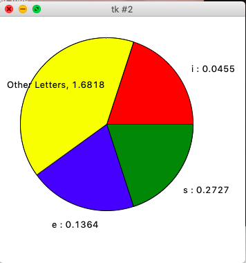

I'm an undergraduate student at The City College of New York majoring in Computer Science, and graduating in Spring 2021. I am currently looking for an internship in Fall 2019, Spring 2020, or Summer 2020. My skills include C, C++, C#, Java, and Python. I have also used many technologies such as git, Linux/Unix bash terminal, Oracle VM VirtualBox, Scenebuilder, various IDE's, and Microsoft Office. I'm currently a member of the CUNY Tech Prep 2019-2020 Full Stack program cohort 5. The relevant courses that I have completed include Data Structures, Algorithms, and Software Design Lab.
The particle fire explosion is a Unix executable graphical program made using C++, and the SDL 2.0 Library. The particles move in a circular sinusoidal pattern as the background, halo effect, and particle colors change over time.
This program is a tip calculator, with a graphical user interface (GUI) made using JavaFX, Intellj IDEA, and Scenebuilder. The textfield on the top is editable so the user can enter an amount, the textfield's on the bottom for the tip, and the total are not editable. All the user has to do is enter an amount, set the tip percentage by moving the slider and hit the calculate button. The Prime Factor Finder application works similarly.
This program is a Mortage Calculator made using JDK 11, and JavaFX. Everything I learned from the Tip Calculator I expanded and applied it to the Mortage Calculator. All the user has to do is input the purchase price, down payment, and using the slider change how many years the mortage would last, then the user would input the interest rate percentage, and hit the 'Calculate Mortage Payments' button, and the results for multiple different payment options would be printed in the textfields below. One of the biggest challenges for this project was understanding how interest and mortgages work and getting the neccesary formula to correctly implement it.
This program is a Contacts Application made using JavaFX, JDK 11, and styled using CSS, The user can upload a profile image from their computer as long as it is a .jpeg, or .png image file. Then they can enter their first name, last name, phone number, email address, along with their CUNY EMPLID number. Then the user can save this contact so that it appears on the list of contacts, which is sorted alphabetically. If the user wants to delete a contact they can select it from the sorted list on the left by clicking it and hitting the delete button. When the user has decided that they have added enough contacts and want to export the information while also saving and exiting the program, they can hit the 'Export as a .txt file' button, the program will prompt the user to look for a .txt file within file explorer or finder and then it will overwrite the information into the text file, and terminate.
This program is a sequence of geometric stars, created by connecting certain edges to vertices. It's built on JDK 11, and JavaFX. Every time this program is executed, the color sequences are randomized.
This program is an Animation made using Java FX, and CSS for the rectangle. As the button is pressed the animation plays! This project was the result of me just messing around with JavaFX 2D shapes, Colors, and Animations, which was not part of the required course material in our Software Design Lab class. Although, it did make for a really fun project.
This Program is a virtual periodic table, made using JDK 10, JavaFX, and CSS. All 118 elements of the periodic table have their own buttons. Each button when pressed prints out information relevant to that specific element. This project seemed simple at first until I had to type 118 FX-id's for each element button and then create functions printing the values for each. If this ambitious project, along with the wrist pain that came with it taught me anything it's that macro keys are your best friends. (Ctrl + w) to expand selction, and (Ctrl + d) to duplicate sections were very useful macro keys in Intellj idea. What could I do to further improve this application in a future version? I would add two additional textfields for displaying the electron configuration, and the boiling point of each element in the periodic table.
Using the Tkinter module in Python, I created a front-end GUI application that would read a text file and graph the recurrence of certain letters, such as consonants and vowels.
Android Note-Pad Application:
Using Unity and C#, I created a simple Notepad application. This approach is pretty unconventional, but the app functions like any other mobile application. Developing this application was a good test in depoloying Unity applications to android, and understanding how USB debugging works, within the developer options in the android operating system.
Sorting Algorithm Visualization
This is an algorithm visualization program (using processing 3.5.3). The algorithm in question is selection sort. I previously tried visualizing bubble sort but realized that it would take over an hour. This is an ongoing endeavor and I'm just messing around with things and tweaking them. My main goal is to see if I can do something like this in JavaScript, and make it a lot more interactive. A follow up to this project could be visualizing more sorting algorithms and dijkstra's shortest path algorithm, as well as prim's and kruskal's algorithms.
Personal Interests:
My interests include playing video games, creating video-games inside the Unity game engine, reading manga, and watching anime. My favorite musical artists and composers are deadmau5, Beethoven, Fedrick Chopin, Hiroyuki Sawano, Hanz Zimmer, and Eminem. Regardless of genre, I generally prefer non-vocal instrumental music as it keeps me more productive. My hobbies range from writing, to sketching, to building computers, to testing the limits of Gnome3 extensions in Ubuntu, to trying other linux distros, and making voxel art.
So what have I been up to lately?
I've learned a lot over these past two semesters, and currently I am in the middle of developing a C# game in the Unity Engine called House of Horrors (seen in the image above), and if you're curious you can check out the WebGL version here!
Check out my MLH HackNY Fall 2019 Team project here!
At NYU Courant Institute Mathematics (September 28 - 29)


 

.jpg)
.jpg)
.jpg)